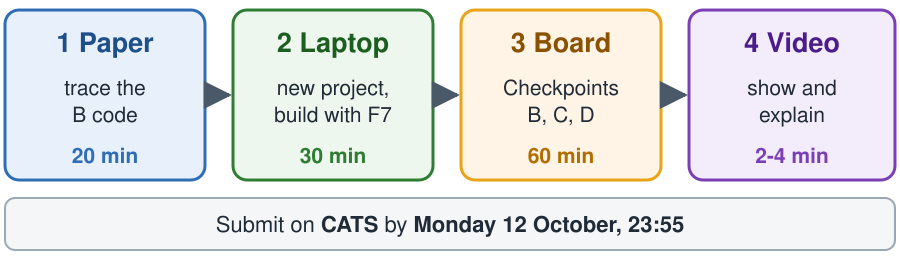
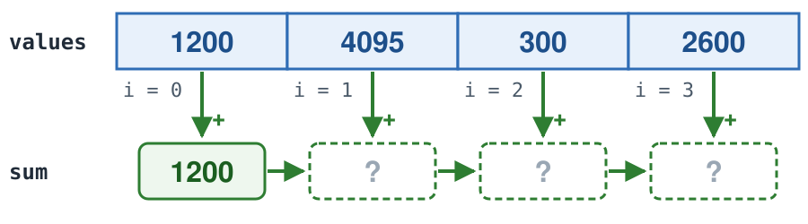
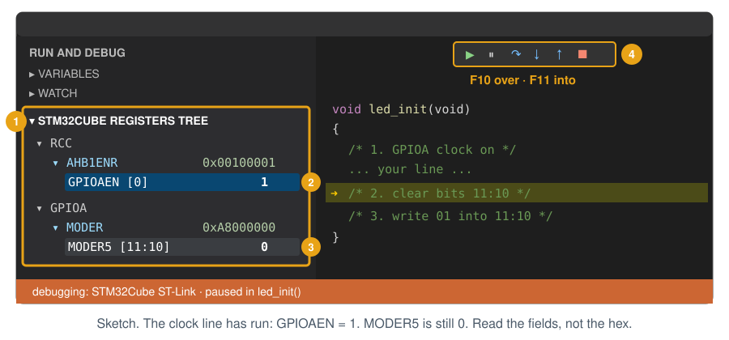
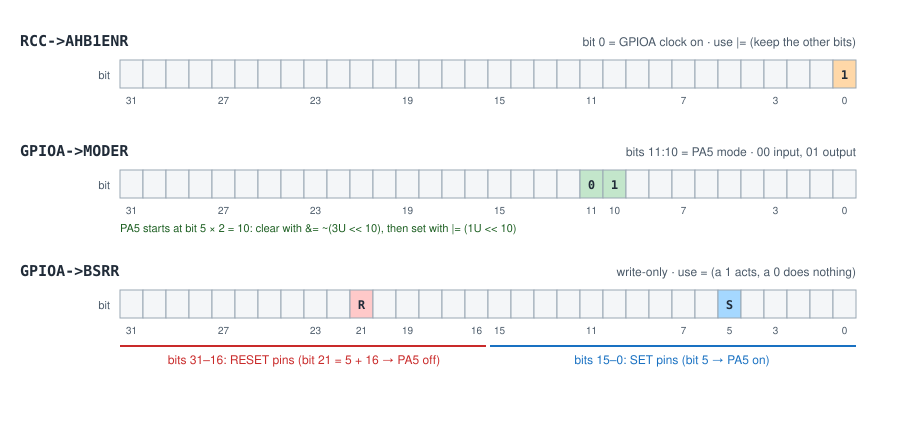
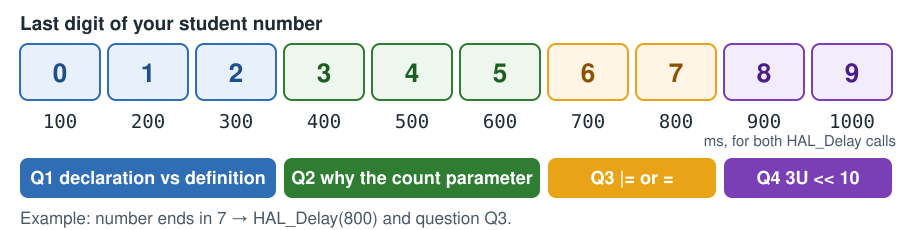
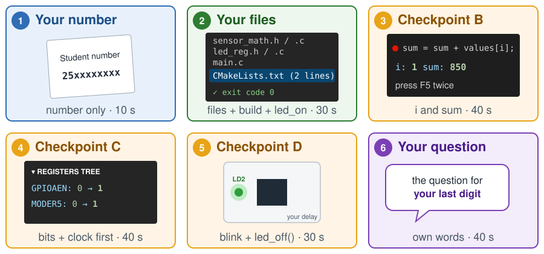

Lab 3 at Home: Finish and Explain
EE5203 Microprocessors — finish Checkpoints B, C and D with your own board, then explain them in a short video
In the lab, most of you reached Checkpoint B. This homework gives you time to understand B and to finish C and D at home. Plan about two and a half hours.

The video gives your marks for Checkpoints C and D and the oral question. It can also replace your lab marks for A and B. You keep the higher mark.
Before you start
- You need your laptop with the Home Setup Guide finished, your Nucleo board and a USB data cable.
- Keep the Lab 3 guide open. This page tells you what is different at home.
- New to the debugger, or not sure what F10 and F11 do? Read the Debugging Guide first (15 min).
| C code | Meaning | Example |
|---|---|---|
uint16_t |
A whole number from 0 to 65535. It has no fraction. | uint16_t x = 4095; |
uint32_t |
A whole number from 0 to about 4 billion. | uint32_t sum = 0; |
values[i] |
Element number i of the array. The first element is values[0]. |
values[2] is the third element. |
a / b with whole numbers |
The result is a whole number. C drops the fraction. | 7 / 2 is 3 |
1U << n |
The number with only bit n set. U means unsigned. |
1U << 3 is 0x8 (binary 1000) |
REG |= MASK; |
Sets the bits of MASK to 1. The other bits do not change. |
x |= (1U << 3); |
REG &= ~MASK; |
Clears the bits of MASK to 0. The other bits do not change. |
x &= ~(1U << 3); |
REG = MASK; |
Writes the whole register. | x = (1U << 3); |
GPIOA->MODER |
The register MODER inside the peripheral GPIOA. |
RCC->AHB1ENR |
#include "file.h" |
This file can now use the functions declared in file.h. |
#include "sensor_math.h" |
1. Checkpoint B on paper (20 min)
Checkpoint B uses two functions. Read what each one does, then answer 1.1-1.4 on your own paper. Do this before you open your project.
clamp_u16(value, low, high) keeps a value inside a range. If value is below low, it returns low. If value is above high, it returns high. Otherwise it returns value. In the lab the ADC range is 0 to 4095, so clamp_u16(4200, 0, 4095) returns 4095.
average_samples(values, count) adds the first count numbers of the array values. Then it returns the sum divided by count. Example: {2, 4, 6} and count 3 give (2 + 4 + 6) / 3 = 4.
1.1 Clamp. Write the return value of each call. The first row is done.
| Call | Returns |
|---|---|
clamp_u16(4200, 0, 4095) |
4095 |
clamp_u16(2050, 0, 4095) |
|
clamp_u16(450, 500, 3000) |
|
clamp_u16(500, 500, 3000) |
|
clamp_u16(3500, 500, 3000) |
1.2 Average. The array is {1200, 4095, 300, 2600} and the call is average_samples(values, 4).
- Draw the four
sumboxes on your paper and write a number in each box.

values[i] to sum, one element at a time. The first box is done.- The exact average is 2048.75. What number does the function return? Explain why in one sentence. Hint: look at the return type of
average_samples.
1.3 Files. Each item below belongs in exactly one file. Write the file name: sensor_math.h, sensor_math.c, main.c or CMakeLists.txt.
| Item | File |
|---|---|
uint16_t average_samples(uint16_t values[], int count); |
|
the body of average_samples, from { to } |
|
samples[i] = clamp_u16(samples[i], 0, 4095); |
|
Core/Src/sensor_math.c |
- A
.hfile (header) holds declarations: the name, the parameters and the return type of each function. It ends with;. - A
.cfile with the same name holds the definitions: the code of each function, between{and}. main.cholds the program that calls the functions.CMakeLists.txtholds the list of.cfiles that the build compiles.
1.4 Build errors. Each error below has one cause. Write the letter of the cause.
| Error message | Cause |
|---|---|
undefined reference to 'average_samples' |
|
implicit declaration of function 'clamp_u16' |
|
conflicting types for 'average_samples' |
main.chas no#include "sensor_math.h".- The
.hfile and the.cfile use different types for the same function. sensor_math.cis not intarget_sources, so it is never compiled.
2. Make the project on your laptop (30 min)
- Do steps 4 and 5 of the Home Setup Guide. Use the name
EE5203_L03_<studentnumber>. - Do only steps 4 and 5 of Lab 3 Checkpoint A: copy the
Corefolder from the starter files, then add the twotarget_sourceslines. - Press F7. Success:
Build finished with exit code 0. Two warnings,unused parameter 'low'and'high', are normal. They go away when you finishclamp_u16.
.vscode folder
Skip step 3 of Checkpoint A. The lab .vscode folder works only on the lab PCs. At home it breaks build and debug. At home: F7 to build, Run and Debug → STM32Cube: STM32 Launch ST-Link GDB Server to debug. In the lab: Ctrl+Shift+B and F5.
3. Checkpoints B, C and D on your board (60 min)
Do Checkpoints B, C and D of the Lab 3 guide. Checkpoint E stays optional. For each checkpoint, open the link, do the steps, then check the Done when line on this page.
Checkpoint B: write and call the two functions
Steps: Lab 3 guide, Checkpoint B (B1 and B2).
Predict first, on paper. At home you may not have your Lab 2 table. Use the eight values in step B2 of the Lab 3 guide:
- Clamp each value to the range 0 to 4095, as in 1.1.
- Add the eight clamped values and divide by 8, as in 1.2. Drop the fraction.
- Write down your prediction for
samples[3]after the loop and foraverage.
Done when: the debugger shows the same samples[3] and average as your paper. If you have your Lab 2 table, the values are the same there too.
Checkpoint C: write led_init() and read the registers
Steps: Lab 3 guide, Checkpoint C (steps 1-4).
These examples use bit 7 and bits 7:6 of a register REG. Your code uses other registers and other bits. Change the register name and the bit numbers.
REG |= (1U << 7); /* set bit 7. The other bits do not change. */
REG &= ~(3U << 6); /* clear bits 7:6 (3 = binary 11, two bits) */
REG |= (1U << 6); /* write the pattern 01 into bits 7:6 */
REG = (1U << 7); /* write the whole register: only bit 7 is 1 */Read the registers in the Registers Tree. In the lab this panel is called XPERIPHERALS. At home it is STM32CUBE REGISTERS TREE (Turkish VS Code: STM32CUBE KAYIT AĞACI). It is in the Run and Debug sidebar and appears when the debugger is running. Expand these three registers. Each field shows the bits you need.
| Register | Field | Shows | Used in |
|---|---|---|---|
| RCC → AHB1ENR | GPIOAEN |
GPIOA clock: 0 = off, 1 = on | C |
| GPIOA → MODER | MODER5 |
PA5 mode: 0 = input, 1 = output (binary 01) |
C |
| GPIOA → ODR | ODR5 |
PA5 level: 1 = LD2 on | D |
Read the field values. The hex number of the whole register also contains other bits, so it is not 0 or 1.

led_init(). F11 steps into the function, F10 runs one line.In Run and Debug, open WATCH, click + and add these three expressions. The program must be paused.
| WATCH expression | Same as |
|---|---|
RCC->AHB1ENR & 1 |
GPIOAEN |
(GPIOA->MODER >> 10) & 3 |
MODER5 |
(GPIOA->ODR >> 5) & 1 |
ODR5 |
The bits behind these fields, from the Lab 3 guide:

Done when: after led_init() has run, GPIOAEN = 1 and MODER5 = 1.
Checkpoint D: turn LD2 on and off with your own delay
Steps: Lab 3 guide, Checkpoint D (steps 1-3).
You write BSRR to switch PA5. You read the result in ODR: ODR5 = 1 means LD2 is on.
Use your own delay. Both HAL_Delay calls use the delay for the last digit of your student number. The same digit chooses your oral question.

Done when: LD2 blinks with your delay. At the breakpoint on led_off();, LD2 is on and ODR5 = 1. After F10, LD2 is off and ODR5 = 0.
4. Record the video (2-4 min)
Film the screen and the board with your phone. Record without stopping. Do not cut or edit the video. If you make a mistake, start a new recording from the beginning. Your voice is required. You do not need to show your face.

- Your number: show your student number on paper. You do not need to say or show your name.
- Your files: show the four module files, your two lines in
CMakeLists.txtand the lineBuild finished with exit code 0. Say where the declaration and the definition ofled_onare. - Checkpoint B: put a breakpoint on the line in your loop that adds to
sum. When it stops, press F5 two times. After each press, sayiandsum. Then showaverage. - Checkpoint C: step through
led_init()with the Registers Tree open. For each line, say which field changes. Say why the clock line must come first. - Checkpoint D: show LD2 blinking with your delay. Stop at
led_off();(LD2 on,ODR5= 1). Step over it with F10 (LD2 off,ODR5= 0). - Your question: answer the question for your digit, in your own words.
- Q1: What is the difference between a declaration and a definition? Where is each one for
led_on? - Q2: Why does
average_samplesneed the count as a parameter? - Q3: Why does
led_inituse|=for the clock, butled_onuses=forBSRR? - Q4: What does
3U << 10select, and why does PA5 start at bit 10?
Recording tips
- Put your phone on a stand or on a stack of books, so both hands are free.
- Make the code bigger in VS Code: Ctrl+= (Mac: Cmd+=). Check that the code is readable in the video.
- Do one practice recording. Check that your voice is clear.
5. Submit on CATS
- One zip file
EE5203_L03_<studentnumber>.zipwith six files: the four module files,main.candCMakeLists.txt. Windows: select the files, right-click → Send to → Compressed (zipped) folder. Mac: select the files, right-click → Compress. - Part 1: a photo of your paper, or your answers typed in a
.txtfile. - The link to your video: Google Drive or OneDrive with anyone with the link can view, or an unlisted YouTube video.
- Open your video link in a private browser window. It must play without a login.
- Your voice and your own delay must be in the video. Without them, it cannot earn marks for D or the oral question.
Marks (10), as in Lab 3: pre-lab quiz 1 (already on CATS) · A project builds 1 · B functions 2 · C led_init and register values 2 · D led_on/led_off and blink 2 · oral question 2.
If something goes wrong
- The Registers Tree is empty or missing: it appears only while the debugger runs. Pause the program once. If it still does not appear, use WATCH (the box in Part 3).
- WATCH shows an error instead of a number: the program must be paused. Check the spelling:
GPIOA,MODER,->. undefined referenceorimplicit declaration: see your answers to 1.4.- LD2 never lights:
MODER5must be 1 afterled_init. - The register hex number is not 0 or 1: normal. Read the field, for example
MODER5. - Board not found: see If something goes wrong in the Home Setup Guide.
Still stuck? Send your lab assistant the step number and the first error line as text, not a photo. Do it before the weekend, so there is time to help.